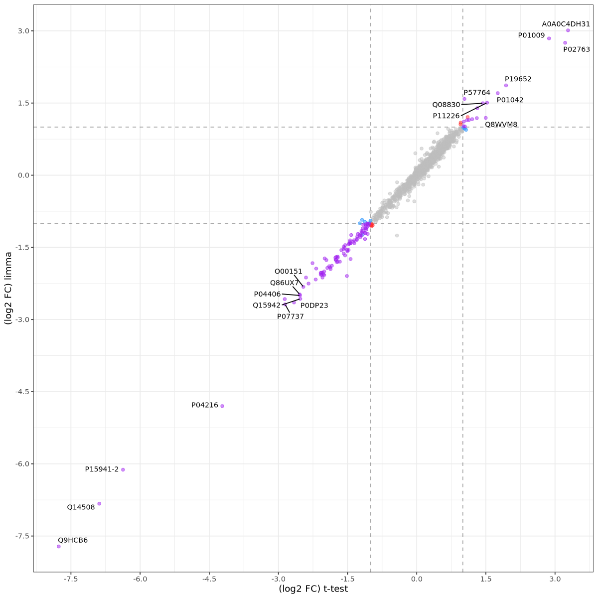
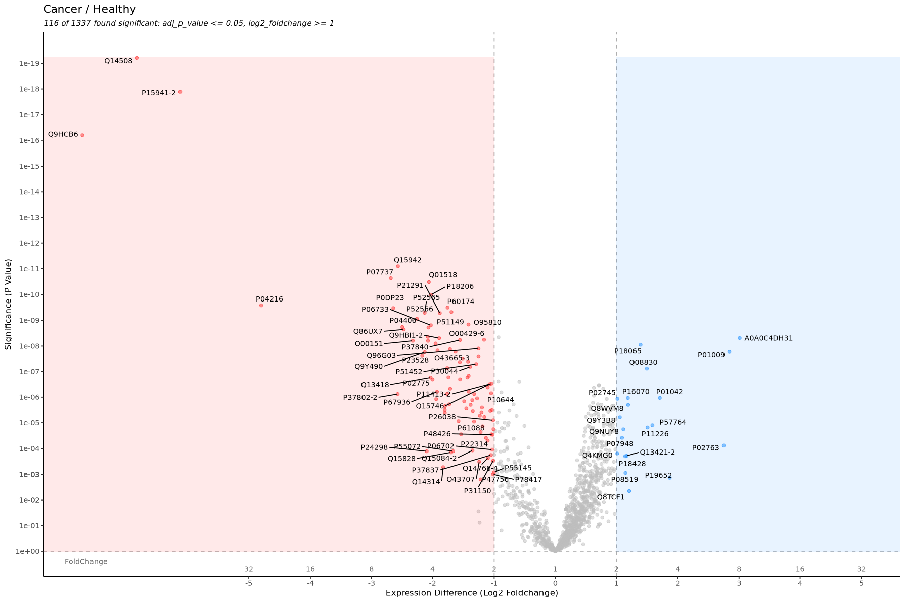

Slot 90 · limma · Proteomics: Differential Expression · layout mock
Picked on the arc mock: two pages, Variance · Test, and Replicates 3 · 5 · 11 per group. The
misconception is cell 9's: limma's log2FC is not shrunk; limma shrinks each protein's variance toward a prior fitted across all
proteins, and that changes the t, so the p-value. This mock draws each page at the widget's 550px from 01-4 cells 0, 3–9 and 14
and its two figures (below). Every simulated number is computed on this page by _lab/proteomics-arc-model.js, whose
limma arithmetic reproduces the lesson's own limma_t_statistic to 1e-10. Blue-ruled boxes in §8 are your calls.
01-4 cell 8 · plot_compexp(): log2FC, t-test against limma

01-4 cell 14 · plot_volcano(), limma

1 · Measured before the mock
The simulation. 1,337 proteins (the lesson's count), each protein's true variance drawn from limma's own prior with the lesson's fitted values (d0 = 3, s0 = 0.33 log2), about 10% truly different by 0.5–1.5 log2. 20 seeds, called at BH adjusted p < 0.05, computed live:
The same comparison on the lesson's own table (01-4's 1,337 proteins; 50 random draws of 3 and of 5 samples per group from its 11; there is no truth, so “in the 22-sample list” counts the calls that limma also makes on all 22 samples):
| 01-4's table, log2 | fitted d0 | weight own : prior | ordinary t, called | … in the 22-sample list | moderated t, called | … in the 22-sample list |
|---|---|---|---|---|---|---|
| 3 vs 3 (mean of 50 draws) | 2.8 | 4 : 2.8 | 28.9 | 27.1 | 87.8 | 83.0 |
| 5 vs 5 (mean of 50 draws) | 2.9 | 8 : 2.9 | 242.9 | 229.8 | 279.0 | 263.2 |
| 11 vs 11 (the lesson) | 3.1 | 20 : 3.1 | 678 | 669 | 692 | 692 |
Both say the same thing: with 3 replicates the moderated t finds three to seven times as many proteins at the same FDR; at the lesson's 11 it changes 14 calls of 692. The prior carries d0 ≈ 3 degrees of freedom against a protein's own 2n − 2, so its weight falls as replicates rise. That is the Replicates control.
One thing the lesson's table shows that a simulation would not. The 50 proteins with the smallest own SD all have one group entirely imputed (01-3's forest fills a group with values of SD 0.13 against 0.21 for the measured group); 372 of the 649 proteins with half or more of one group imputed sit below the prior's s0, against 21 of 392 with nothing imputed. Fitted on the never-imputed proteins alone, the prior is d0 = 9.0, s0 = 0.50; on all of them, d0 = 3.1, s0 = 0.33. The prior is learned mostly from imputed values. At 11 vs 11 the moderated t drops 9 proteins the ordinary t calls, all 9 heavily imputed. §7 has it as a notebook note; it is why §8.1 recommends the simulation.
2 · The Variance page — each protein's own SD, the prior, and the moderated SD
01-4 cell 0's two bullets as a picture: fits a linear model for each protein (each protein's own SD from its replicates), then borrows strength across all proteins (a prior fitted to all of them, and each SD pulled toward it). Three arms at 3 vs 3, the default seed below.
C recommended: B's histogram says what “across all proteins” is, and the one protein below says how much it moves, as the weighted average limma computes (the weights are the two degrees of freedom). It is 78's Shrinkage page in shape — a protein's own estimate, the prior, the shrunk value, a protein walked through — on the quantity limma shrinks. A Step press: 1 each protein's own SD (the histogram fills), 2 the prior fitted (the curve and s0), 3 every SD moved to its moderated value (the histogram narrows; the protein's bar slides).
3 · The Test page — the same proteins, ordinary t and moderated t
Cell 14's volcano is the page's figure; the question is how the two statistics meet on it. All three at 3 vs 3, True values On (a ring: a protein that truly differs).
B recommended: one volcano, a Statistic control Ordinary t · Moderated t, and every protein moves straight up or down when it changes — the x axis cannot move, because limma's log2FC is the mean difference to the last digit. That motion is cell 9's correction without a sentence. C is cell 8's layout with the quantity that does differ; it reads well beside a volcano but costs the page its height.
4 · The rail, as recommended
Readout, Test page: Called at adjusted p < 0.05: ordinary t N, moderated t M; with True values On, true and false positives for each. Variance page: the fitted prior (d0, s0), and the example protein's own, prior and moderated SD.
5 · Colours
Own SD --c-empirical; the prior (curve, s0) --c-prior; the moderated SD --c-posterior;
called significant --c-extreme; truly different a ring in --c-reference. Cancer and healthy are not coloured on
the Variance page: --c-prior shares its slot with --c-group-b (tokens.css: a figure with a prior has no
A/B arms), so the example protein's two groups are two labelled rows in ink. The Test page has no prior and could colour them, but a
volcano has no per-sample marks, so nothing there needs it.
7 · Notebook notes (for you, not the widget)
7.1 · cell 9 (told 2026-10-05): limma's log2FC equals mean log2(cancer) − mean log2(healthy) exactly; cell
8's scatter is off the diagonal because the t-test table's fold change is computed on the unlogged scale, not because of shrinkage.
A replacement sentence: “The fold changes differ only in scale: limma reports the difference of mean log2 abundances. What
limma shrinks is each protein's variance, toward a value fitted across all proteins, which changes the t-statistic and the p-value.”
7.2 · new: limma's prior on this data is fitted mostly from imputed values (§1, last paragraph). One line after cell 12
would show it: the prior's s2.prior and df.prior from limma::eBayes, fitted on all proteins and on
the proteins with nothing imputed. Untested in R here.
8 · Your calls
8.1 · The data A · simulated (recommended): 1,337 proteins with the lesson's fitted prior, a truth to ring, and no imputation inside the variances | B · the lesson's own table, Replicates as draws from its 11; no truth, so no True values, and the variances are mostly the forest's (§1)
8.2 · The Variance page A · sorted own SD and moderated SD | B · the histogram and the fitted prior | C · B above, one protein below (recommended)
8.3 · The Test page A · two volcanoes side by side | B · one volcano and a Statistic control, the dots moving vertically (recommended) | C · ordinary t against moderated t, cell 8's layout
8.4 · What the volcano calls significant A · adjusted p < 0.05 only (recommended): limma changes the p-value, and a fold-change cut-off is the same line for both statistics | B · cell 14's two cut-offs, adjusted p ≤ 0.05 and |log2FC| ≥ 1 (the simulated differences are 0.5–1.5, so about half the true ones sit under the line whatever the statistic)
8.5 · Default Replicates A · 3 (recommended): where the two statistics differ; 11 is one press away | B · 11, the lesson's
8.6 · The example protein A · three named — Small SD by chance (a protein that does not differ, in the ordinary t's top calls) · Typical · Large SD — or a click on any protein (recommended, as 89) | B · a click only
8.7 · The Variance page's press A · Step, three steps (recommended): own SD, prior, moderated — read one at a time | B · no press; the page opens with the histogram empty and one press draws the finished figure
8.8 · Colours A · as §5 (recommended) | B · say which to change